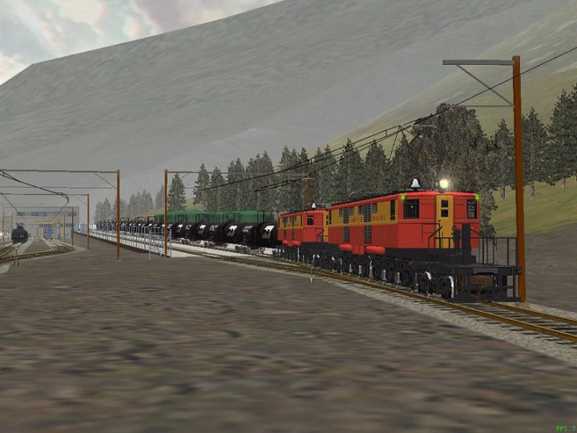

Images show the spurs appearing normally in the AE: these are from a test activity which includes dropping the tankers exactly in said spur. I saved and exited thereafter, loaded again, did some more shunting, drove on a few tiles, saved & exited, loaded, reversed, came back, still no problem.

The result: trains rolled in and over the edited sections without fault, stayed put after uncoupling, stayed put after saving and re-loading the activity, could be picked up again. Everything looked normal, as with any "ghost" track edited out of the tile but left in the .TDB.
I carefully tried the same on a siding which still had the SidingItem markers, a speed limit at its end, a CollideObject (the nastelbuff) and SoundRegions placed on it - and it all still worked nicely, without error messages either in the RE or the Sim itself - at least as long as I didn't try to select any of the interactive items mentioned (which I didn't want to risk at that time). So I'm actually investigating how far I can stretch this trick, yet I'm still skeptical about leaving interactive items in, even if it surprisingly seemed to work in the first place.